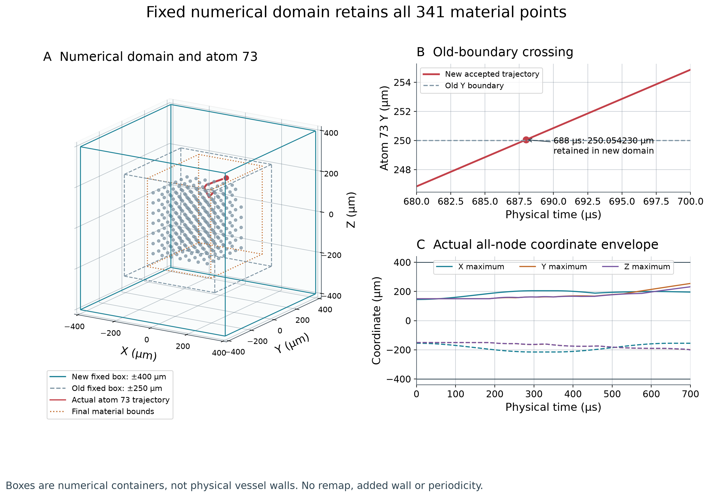
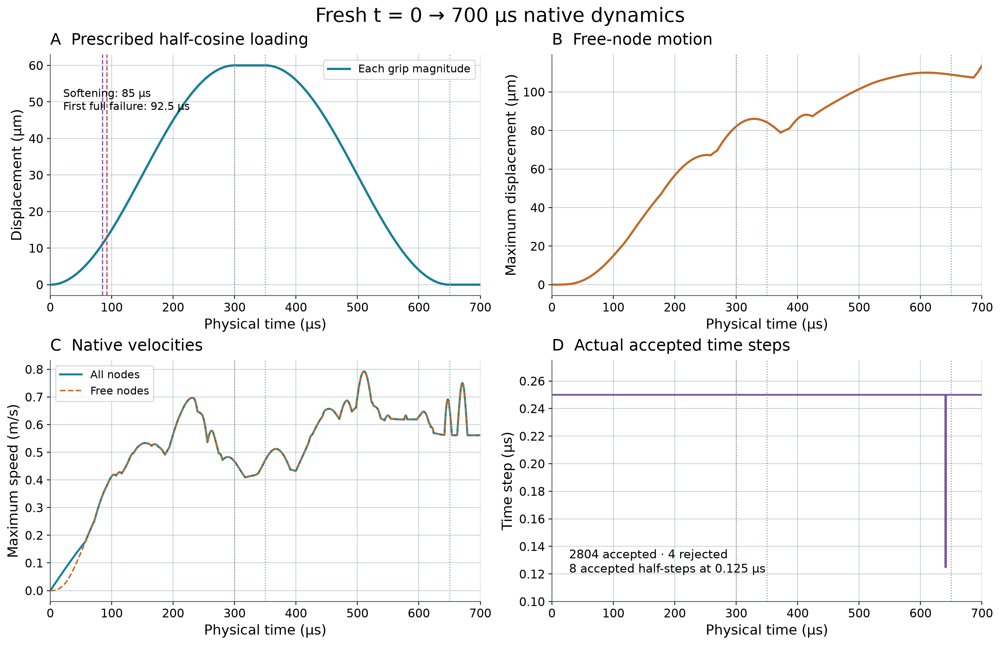
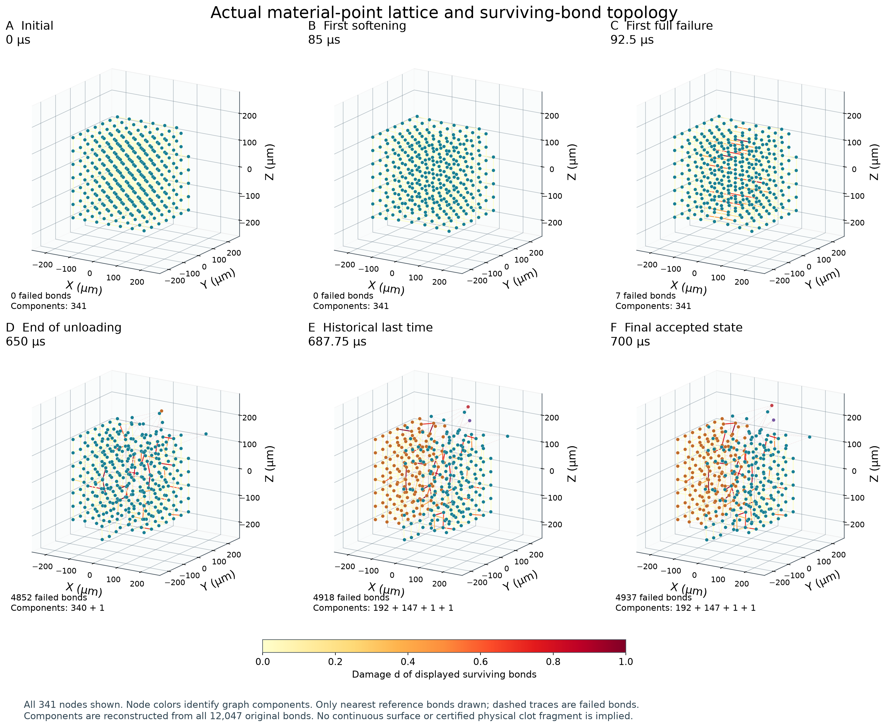
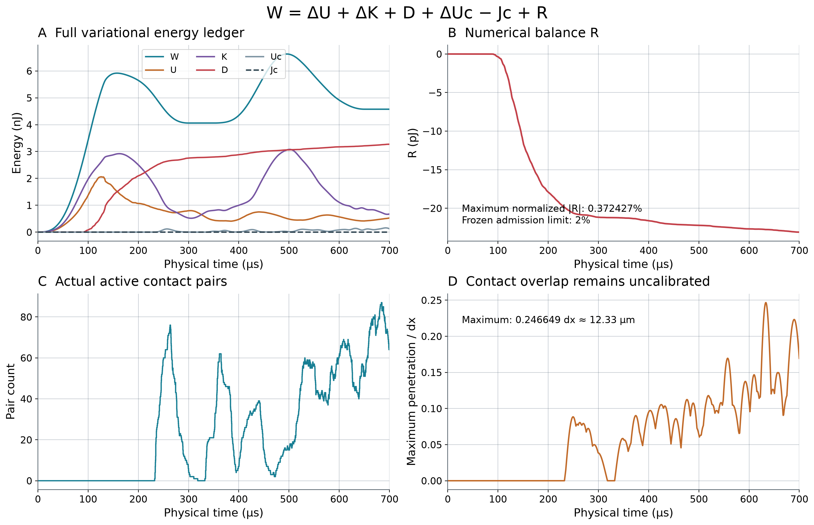
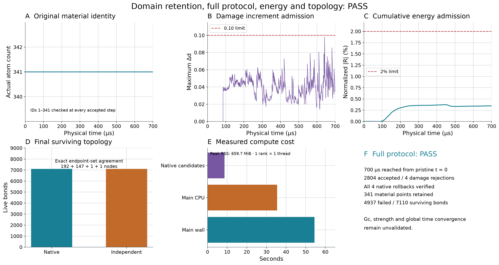

Run 20261014T150825Z · 固定域各轴 ±400 µm · 2804接受 / 4拒绝 · 最大Δd 0.0978676 · 最大相对能量余额0.372427%。全程341点保留；末态4937失效、7110存活键；分量192+147+1+1。
全部图来自本次原生计算的FP64数据。数值计算域不是血管壁；点阵分量尚不能称为认证的真实血栓碎块。接触物理精度、材料Gc、宏观强度和全局时间收敛仍未认证。

原盒子各轴 ±250 µm、新盒子 ±400 µm；真实341点、节点73全程轨迹和末态包络。688 µs新接受态与旧漂移预测相容，旧运行并无688 µs合法接受态。盒子仅为数值域，不是血管壁。

原始t=0新运行，左右每侧最大60 µm；全部曲线采用真实累计物理时间。0–300升载、300–350保持、350–650卸载、650–700最终保持；图中子步为实际接受的原生VV步。

六个真实FP64状态；全部341点均显示，节点颜色表示全参考键图连通分量，存活短键按真实d着色，失效短键用淡虚线显示。为辨识点阵仅绘r0≤1.01dx的键，统计和连通性使用完整12047参考键。不是连续医学外壳，也不是已认证真实血栓碎块。

沿用完整变分能量账本及原归一化；Jc实际为0。实际接触对逐步保存。1.0dx接触规则未修改，最大重叠约12.33 µm仍未解决其物理精度问题。

四项准入分开报告：域保留、完整700 µs、能量、原生与独立拓扑一致。成本为本次主计算实际统计；未重新编译、未启用GPU或额外物理工况。材料Gc、宏观强度、全局dt收敛和接触物理精度仍未认证。